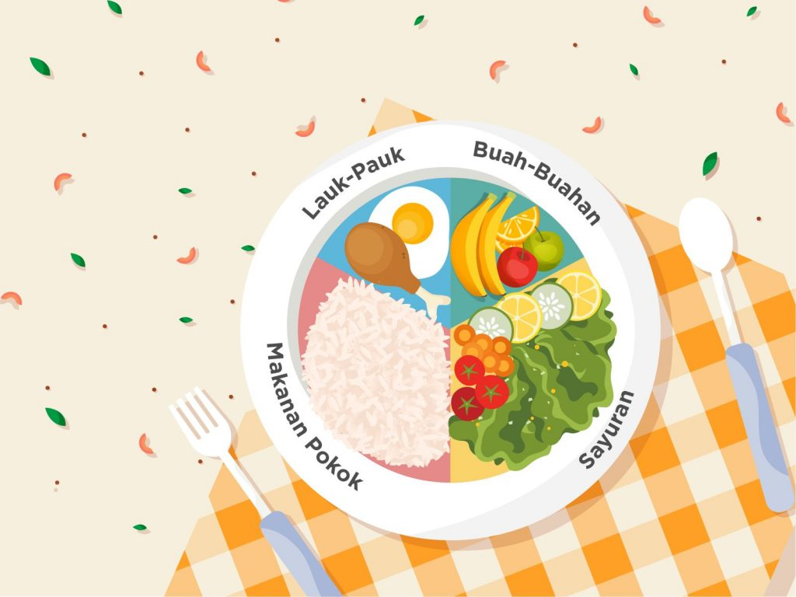

makanan sehat adalah makanan yang memiliki kandungan karbohidrat, protein, lemak, dan vitamin. Asupan nutrisi untuk tubuh bisa didapat dari beragam jenis makanan sehat, tidak terbatas pada satu jenis saja.
SMK WIKRAMA merupakan sekolah yang menerapkan makanan sehat karna makanan di kantinnya pun tidak ada micinnya, dan selalu mengingatkan kepada siswa dan siswinya mengkonsumsi makanan sehat